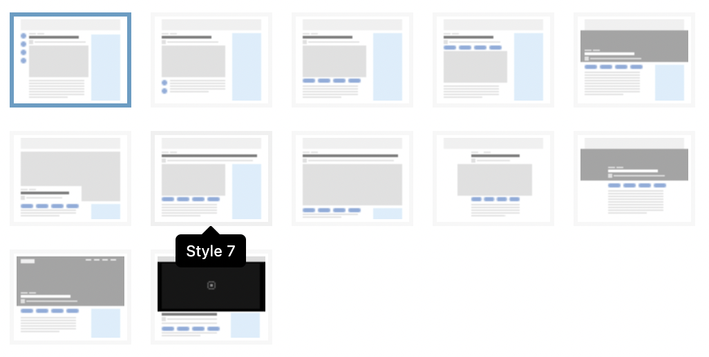
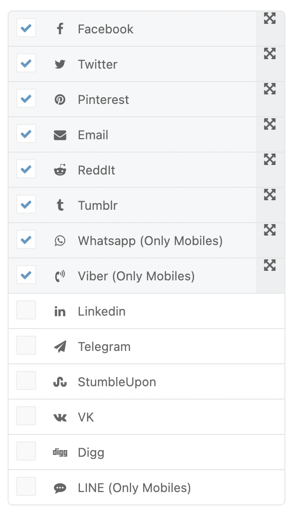
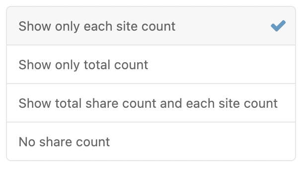

A single post, on a magazine site, is the most important page. In this section, we will cover all aspects you should be aware of to create engaging posts for your visitors.
Post: Template
In this part, you can setup general template for your single post. You can disable each part of template on this section.
-
Single post template
Select default template for single posts. This option can be overridden on all posts.
 -
Post Thumbnail Size
Turn on this option to set default image thumbnail size. Please note, if you’re using post template with image full size, this option will be ignored. -
Show Breadcrumb
Turn on this option to show breadcrumb. -
Show Featured Image/Video
Turn on this option to show featured image or video. -
Show Excerpt
Turn on this option to show except. -
Show Tags
Turn on this option to show post tag. -
Show Next/Prev Post Links
Turn on this option to show prev and next post. -
Show Author Box
Turn on this option to show author box. -
Article Extra Classes
Choose post wrapper classes. You can add your own classes or choose from predefined classes. -
Post Image Popup Script
Turn on this option to use featured image with popup. -
Post Images as Gallery
Turn on this option to set images on a single post as one instance of gallery. Please note, this option will appear and work if you choose Post Image Popup Script option above. -
Post Video Autoplay
Turn on this option to enable autoplay for video post format.
Post: Layout
In this part, you can setup general layout and background setting for your single post.
-
Layout
Select the layout you want, whether a single column or a 2 column one. This overrides general layout setting of website.
-
Primary Sidebar
Pick a sidebar for Primary Sidebar. This option is not available for Layout 3.
-
Secondary Sidebar
Pick a sidebar for Primary Sidebar. This option is not available for Layout 1, 2 and 3. -
Primary Sidebar Content Gap
Gap between content and primary sidebar.
-
Layout Style
Select layout style you want to use full boxed or content boxed layout.
- Full Width
Full wide width for header, footer and content.
- Full Boxed
Full boxed width for header, footer and content.
- Content Boxed
Header and footer will have full width, content will be inside boxed area.
-
Site Container Width
Choose size of site content container width. Please note, this option will appear if you enable Layout Style option.
-
Site Boxed Inner Width
Choose size of site content container width inside boxed content. Please note, this option will appear if you enable Boxed or Content Boxed Layout option. -
Site Background Color
Choose color for background. Please note, this option will appear if you enable Layout Style option. -
Site Background Image
Choose an image for background. Please note, this option will appear if you enable Layout Style option. -
Site Inner Background Color
Choose color for background. Please note, this option will appear if you enable Boxed or Content Boxed Layout option.
Post: Meta
In this part, you can setup meta section for your single post.
-
Post Meta Type
Turn on this option to show post meta.
-
Show Post Author
Turn on this option to show post author. Please note, this option will appear and work if Post Meta Type option enabled. -
Show Post Author Avatar
Turn on this option to show post author avatar. Please note, this option will appear and work if Post Meta Type option enabled. -
Show Post Date
Turn on this option to show post date. Please note, this option will appear and work if Post Meta Type option enabled. -
Show Post Comment Count
Turn on this option to show post comment count. Please note, this option will appear and work if Post Meta Type option enabled.
-
Show Post View Count
Turn on this option to show post view count. Please note, this option will appear and work if Post Meta Type option enabled.
Post: Autoload
In this part, you can setup auto-load next post feature for your single post.
-
Post Autoload
Enabling this will enable next post autoload.
-
Post Autoload Inline
Enabling this will use inline post autoload. This Option is only available for Post Template 1-2-3-4. -
Autoload Content Filter
Choose which the most relevant content will autoload after current post.
Post: Voting
In this part, you can setup voting for your single post. You should activate "Newsy Voting" plugin to access this options.
-
Post Voting Position
On this option, you can choose position of voting buttons on the single post. -
Post Voting Style
On this option, you can choose which style you prefer for your voting buttons. -
Post Voting Count Show Type
On this option, you can choose counts reveal type for voting. -
Show Only Up/Like Voting Button
On this option, you can choose on or off if you only want to show up/like button. -
Up/Like Voting Icon
On this option, you can choose custom icon for up/like button icon. -
Down/Dislike Voting Icon
On this option, you can choose custom icon for down/dislike button icon. -
Guest voting is enabled?
On this option, you can enable voting for guest users.
Post: Share
In this part, you can setup share buttons for your single post. You should activate "Newsy Social Share" plugin to access this options.
-
Social Sites
Select and Drag and Drop To Sort The Items

-
Social Share Threshold
Set the number of social share threshold. The total number of social share will be shown if it reaches more than this threshold. -
Social Icons Type
Set which social icons style that you want to use.

-
Show Share Count
Enabling this will show post share count in share box.
-
Show Top Share Buttons
Enabling this will adds share links in top of single post. -
Show Bottom Share Buttons
Enabling this will adds share links in bottom of single post.
Post: View Counter
In this part, you can setup post views for your single post. You should activate "Newsy View Counter" plugin to access this options.
-
Enable 7 days Views?
This allows weekly most liked posts on post blocks filter tab. -
Custom View Count Icons
This allows you to select custom icon&color for view counts on the post meta.
Post: Newsletter Box
Post: Reaction Box
In this part, you can setup reaction voting for your single post. You should activate "Newsy Reaction" plugin to access this options.
-
Show Reaction Voting Box
Turn on this option to show reaction voting block.
-
Block Header Style
Block header style for reaction block. -
Block Extra Classes
Block custom CSS classes for reaction block.
Post: Related Posts
In this part, you can setup related posts block for your single post.
-
Related Posts Type
Choose which the most relevant content will be shown. -
Block Header Style'
Block header style for related posts block.
Post: Comments
In this part, you can setup comments area for your single post.
-
Comments Tabs
Select multiple types to show as tab. You can order comments types
-
Comments Load Type
Select comments load type in the post content. -
Facebook Comment App ID
Insert your Facebook App id. You can create an application and get Facebook App id for your website here. Please note, this option will appear and work if you choose Facebook Comment on Comment Tabs option on above.
-
Disqus Api Key
Insert your Disqus API key. You can create an application and get Disqus API Key for your website here. Please note, this option will work if you choose Disqus Comment on Comment Tabs option on above. -
Disqus Comment Shortname
Insert your Disqus shortname. You can register your website and get Disqus shortname for your website here. Please note, this option will work if you choose Disqus Comment on Comment Tabs option on above. -
Remove URL Field from WP Comment Form
With enabling this URL will removed from comments form. -
Block Header Style
Block header style for comments block. Please note, this option will work if you choose multiple comments tabs.
-
Block Extra Classes
Block custom CSS classes for comments block.